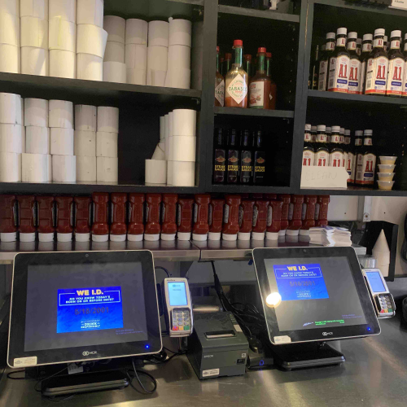

Condiments

Cleaning
Collect all dirty A1 and Tabasco bottles.
You'll need to search all tables for this and in the condiments cabinet shelves.
Clean A1 and Tabasco bottles.
Soak the caps in a 1/6 pan with boiling water (5 mins) and wipe the top of the condiments using a towel.
Clean the alley POS.
Here is a checklist of what needs to be wiped and cleaned:
Electronics (screens, cables, printer)
Counter-top
Trash (Emptied and placed upside-down)
Use a clean sign.
Mark the condiments clean using a small sign (printer paper will work). From that moment on, servers will clean their own.
Stocking
Oil and vinegar. (salad window)
Oil is on the back line, under the label maker, in a large card-board enforced jug.
Vinegar is in dry storage. We carry two kinds of vinegar, make sure you use the green jug.
Fill cups and lids.
Next to the salad window is a black rack. Fully stock the 2oz portion cups, 2oz lids, and 3.25 oz lids.
A1's and Texas Roadhouse Steaksauce
If any new packages of A1 or Texas Roadhouse steaksauces are available above the condiments cabinet, pull them down and stock up the station.
Front all the opened sauces when doing this, please!